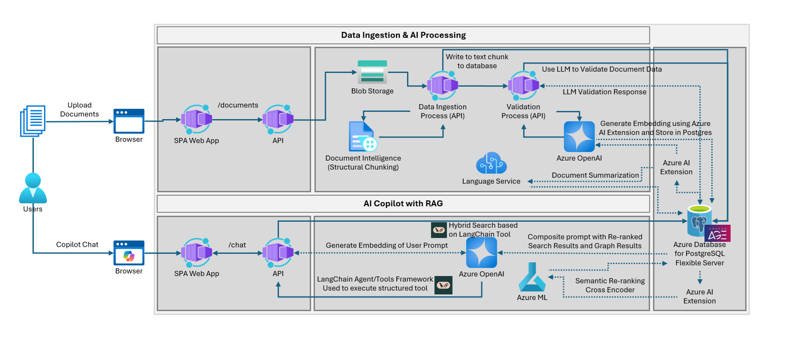
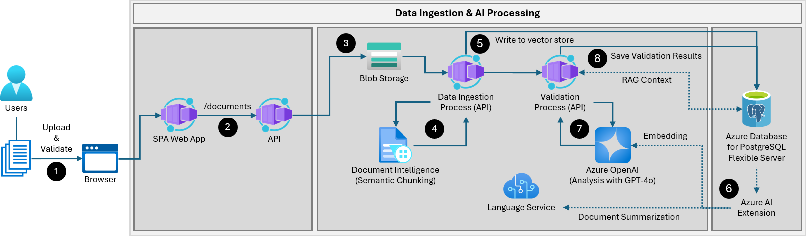
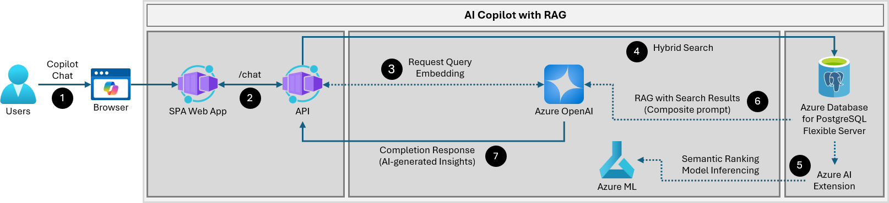

1.2 アプリケーションアーキテクチャ¶
Woodgrove Bank Contract Management アプリケーションは、請求書やSOWからのデータの抽出、検証、保存を自動化し、手作業を最小限に抑え、運用効率を向上させると同時に、内部アプリケーションユーザーがデータから実用的な洞察を得られるようにします。この合理化されたフローに焦点を当てることで、ソリューションは面倒な作業を効果的に自動化し、エラーを減らし、内部ユーザーに貴重な洞察を提供し、全体的な運用効率と意思決定を向上させます。
独自のデータを使用しますか？
アーキテクチャは柔軟性を持って設計されており、デフォルトのサンプルデータを超えてカスタムデータセットに適応できます。独自のデータを使用する予定がある場合は、互換性を確保するためにデータベーススキーマ、データパイプライン、およびインデックス戦略を確認することをお勧めします。このプロセスを合理化するための推奨変更とカスタマイズのガイダンスは、ドキュメントに記載されています。
このソリューションアクセラレータを通じて、AI機能を備えたアプリケーションを強化します。アプリケーションは、UX（ユーザーエクスペリエンス）を提供するReactシングルページアプリケーション（SPA）、FastAPIを使用してPythonで書かれたバックエンドAPI、およびさまざまなAzureサービスで構成されています。ソリューションは次の高レベルのアーキテクチャを実装しています：

分離されたアプリケーションアーキテクチャ
アプリ機能を専用のUIとバックエンドAPIに分離することにはいくつかの利点があります。まず、モジュール性と保守性が向上し、UIまたはバックエンドを独立して更新でき、他方を中断させることなく行えます。ReactとNode.jsは、ユーザーインタラクションを簡素化する直感的でインタラクティブなユーザーインターフェースを提供し、FastAPIを活用したPython APIは高性能で非同期のリクエスト処理とデータ処理を保証します。この分離はまた、異なるコンポーネントを複数のサーバーに展開できるため、リソース使用を最適化し、スケーラビリティを促進します。さらに、バックエンドAPIが機密データと認証を別々に処理できるため、UI層での脆弱性の露出リスクを減らし、より良いセキュリティプラクティスを可能にします。このアプローチは、より堅牢で効率的、かつユーザーフレンドリーなアプリケーションにつながります。
アプリケーションデータフロー¶
以下のタブを選択して、Woodgrove Bank 契約管理アプリケーションにおけるデータの流れについて詳しく学びましょう！
自動データ取り込みとAI検証プロセスの仕組み
内部ユーザーと外部ベンダーは、直感的なブラウザベースのユーザーインターフェイスを通じて、新しいドキュメント、SOW、および請求書をシステムに導入できます。このアクションにより、これらのドキュメント内のデータを抽出および検証する自動プロセスが開始されます。抽出されたデータと検証結果はUIでユーザーに返され、必要に応じてレビューや更新を行うことができます。

-
SOW、請求書、および関連ドキュメントは、Woodgrove Bank 契約管理ポータルを介して取り込まれます。これは、ウェブブラウザを通じてアクセスされるReactシングルページアプリケーション（SPA）です。内部ユーザーと外部ベンダーは、ポータルを通じてドキュメントを提出できます。
-
SPAウェブアプリは、アップロードされたドキュメントをバックエンドAPIの
/documentsエンドポイントに直接送信します。 -
Azure Container App (ACA) としてホストされているAPIは、アップロードされたドキュメントをAzure Blobストレージのコンテナに保存します。
-
Blobストレージに元のドキュメントを保存することで、生データを保持できます。
-
処理エラーが検出された場合やシステム要件が変更された場合、ドキュメントを簡単に再処理できます。
-
-
新しいドキュメントがBlobストレージに追加されると、API上のデータ取り込みプロセスが呼び出されます。
-
データ取り込みプロセスは、アップロードされたドキュメントをAzure AI Document Intelligenceサービスに送信することで、データの抽出と処理を行います。
-
Document Intelligenceサービス内のAIモデルは、支払いマイルストーン、期日、請求額、ベンダーの詳細など、特定のデータフィールドを抽出するように調整されています。これらのモデルは、財務ドキュメントの構造を認識するように訓練されており、データ抽出の精度を向上させます。
-
ドキュメントインテリジェンスのセマンティックチャンク機能は、ドキュメントの構造を認識し、見出しをキャプチャし、段落や文などのセマンティックな一貫性に基づいてコンテンツ本体をチャンク化します。これにより、RAGパターンクエリで使用するためのチャンクの品質が向上します。
-
-
抽出されたドキュメントデータは、APIによってAzure Database for PostgreSQLフレキシブルサーバーに安全に書き込まれます。
-
データベース挿入文の一部として、
azure_ai拡張機能のGenAI機能が使用されます：-
Azure OpenAIの
text-embedding-ada-002モデルを使用して、ドキュメントチャンクのベクトル埋め込みを生成し保存します。 -
Azure AI Languageサービスを使用して、SOWの抽出要約を作成します。
-
-
ドキュメントデータは、Document Intelligenceによって抽出されたデータを分析するAzure OpenAIを使用したAPI上のAI駆動データ検証プロセスを通じて送信され、期待される基準に準拠し、システム内の関連データに基づいて正確であることを確認します。
-
Azure OpenAIのGPT-4o言語モデルは、自然言語理解を用いて情報を検証およびクロスチェックし、高いデータ整合性を確保するために、すべてのドキュメントデータをレビューします。
-
RAGパターンは、請求書とSOW間のデータをクロスリファレンスし、支払いマイルストーンの完了と請求を評価し、支払い遅延などの問題を防ぎます。また、契約書やSOWに適切なドキュメントセクションと必要なコンプライアンス言語が存在することを検証し、不完全な契約やコンプライアンス違反を回避するのに役立ちます。
-
-
データ検証結果は、分析されたデータとともにAzure Database for PostgreSQLに安全に保存されます。検証結果は、
azure_ai拡張機能を使用して挿入時にベクトル化されます。
カスタムコパイロット体験の仕組み
内部ユーザーは、データを取得拡張生成（RAG）パターンを採用したインテリジェントなコパイロットを通じて操作します。このコパイロットにより、ユーザーは契約データに関する質問を行い、ベンダー契約の履行状況や請求の正確性に関する貴重な洞察を得ることができます。

-
ユーザーは、ブラウザーインターフェースを通じて_Woodgrove Bank Contract Management Copilot_と対話し、クエリを投げたり情報を求めたりします。
-
React SPAは、これらのチャットメッセージをACAにホストされている
/chatAPIエンドポイントに送信します。 -
リクエストクエリは、Azure OpenAIの
text-embedding-ada-002モデルを使用して埋め込まれます。 -
Azure Database for PostgreSQLフレキシブルサーバーでハイブリッド検索が実行され、関連するデータが検索されます。
-
ハイブリッド検索は、フルテキスト検索とベクトルベースの検索を組み合わせて、より正確で関連性の高い結果を提供します。従来のキーワードマッチングとセマンティック類似性の両方を使用して検索を行うことができ、テキストの文脈や意味を理解するために埋め込みを活用します。
-
これらの2つの方法を統合することで、ハイブリッド検索は検索結果の精度と包括性を向上させ、セマンティック検索、推薦システム、コンテンツ発見などのアプリケーションに最適です。
-
-
（オプション）
azure_ai拡張からのモデル推論によるセマンティックランキングが検索結果の関連性をランク付けし、RAGコンテキストの一部として複合プロンプトに返されます。 -
Azure OpenAIは、複合プロンプトを使用して応答を生成します。
- 複合プロンプトには、PostgreSQLデータベースに対するハイブリッド検索の結果によって提供されたコンテキストで拡張されたシステムプロンプトが含まれています。
-
AI生成の完了応答は、ブラウザーインターフェースを通じてユーザーに返され、システムに保存されたデータに基づいた実用的な洞察を提供します。情報の効率的な流れにより、ユーザーは必要な情報を迅速かつ正確に取得できます。